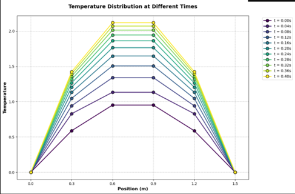

The Algorithms Behind Heat Equations
Explained by Partial Differential Equations
Meet Our Team

Frederick Chong Yew Shen
293228
Software Scientist and Engineer
Norman Mohammad Bin Sumar
294807
Theoretical and Principal Scientist and Engineer
Alban Heng Yu Cheng
291958
Research Scientist and Engineer
Kee Chin Yuan
294093
Systems Scientist and Engineer

WHAT IS PARTIAL DIFFERENTIAL EQUATION?
Partial Differential Equation (PDE) is a mathematical equation that involves a function with multiple variables and its partial derivatives, describing how the function changes with respect to each variable independently. PDEs are used to model complex phenomenons that depend on several factors, like time and space, such as heat conduction, wave propagation, fluid flow, and many physical and engineering processes. For example, the heat equation—a well-known PDE—describes how temperature changes over time across a spatial region. In essence, PDEs allow us to capture and analyze how quantities evolve in multidimensional settings.
How to Identify the Order and Degree of a PDE
Order of PDE: The order of the highest partial derivative that occurs in PDE.
Degree of a PDE: The degree of the highest order derivative which occurs in it after the equation has been rationalized.
Example of 1st Order and Degree 1:
\( \frac{\partial z}{\partial x} + \frac{\partial z}{\partial y} = z + xy \)
Example of 3rd Order and Degree 1:
\( \left( \frac{\partial z}{\partial x} \right)^2 + \frac{\partial^3 z}{\partial x^3} = 2x \left( \frac{\partial z}{\partial x} \right) \)
How to Differentiate Between Linear PDE and Non-Linear PDE
A PDE is said to be linear if the dependent variable, z and its partial derivatives are only in the first degree and not multiplied. Otherwise, a PDE is said to be non-linear.
Linear PDE
\[ \frac{\partial z}{\partial x} + \frac{\partial z}{\partial y} = z + xy \]
Non-Linear PDE
\[ \left( \frac{\partial z}{\partial x} \right)^2 + \frac{\partial^3 z}{\partial x^3} = 2x \left( \frac{\partial z}{\partial x} \right) \]
Non-Linear PDE
\[ x \left( \frac{\partial z}{\partial x} \right) + \frac{\partial z}{\partial y} = x \]
Classification of 2nd Order Linear Partial Differential Equations for 2 Independent Variables
Suppose \(u(x,t)\) is the solution of a PDE and
\[ A u_{xx} + B u_{xy} + C u_{yy} + F(x, y, u, u_x, u_y) = g(x, y) \]
where \(x\) and \(y\) are independent variables
\[ u_x = \frac{\delta u}{\delta x}, \quad u_y = \frac{\delta u}{\delta y}, \quad u_{xx} = \frac{\delta^2 u}{\delta x^2}, \quad u_{xy} = \frac{\delta^2 u}{\delta x \delta y}, \quad u_{yy} = \frac{\delta^2 u}{\delta y^2}. \]
if \(B^2-4AC\lt0\;\),then the PDE is elliptic
if \(B^2-4AC\gt0\;\),then the PDE is hyperbolic
if \(B^2-4AC = 0\;\),then the PDE is parabolic
What is Heat/Diffusion Equation?
Imagine that you have a rod as shown below. Say that there are heat flows that flow in and out through this rod.
By considering a one-dimensional reference, say \(x\), and we want to know the temperature of a disk with location \(x\) at time \(t\). Mathematically, we recognize the temperature as a function of two independent variables, namely space variable \(x\) and time variable \(t\). We may write this relationship as \(T(x, t), \{x \mid x \in \mathbb{R}, x_0 \leq x \leq x_N\}, \{t \mid t \in \mathbb{R}, t \geq 0\}\) . Now, we make several of the following assumptions that lead us towards the solution for \(T(x,t)\):
- We have known the fixed/ constant density of the rod, described by \(\rho = \frac{Mass}{Volume} \) kg \(unit^{-3}\)
- The cross-sectional area of each disk is constant described by \(A = (Area) unit^2\).
- The temperature \(T(x,t)\) is measured in kelvin, \(K\). Also recall that the conversion from temperature in degree Celsius to Kelvin is \(T(K) = T(^\circ\text{C}) + 273\)
From the above information, we may now determine the total mass of the rod for the section \([x,x+\Delta x]\), where
\[Total \; Mass = \int_{x}^{x+\Delta x} \rho A \, dx\]
Now, ask ourself how can this temperature \(T(x,t)\) may be converted into heat? Introduce the following
- The specific heat energy requried to heat up a kilogram by one degree Kelvin, \(c_v\) and has the unit of energy \(kg^{-1}K^{-1}\).
Note that the total heat energy for the section \([x,x+\Delta x]\) is
\[ \text{Total Heat Energy} = \int_{x}^{x+\Delta x} \rho A c_v T(x,t) \, dx = \rho A c_v \int_{x}^{x+\Delta x} T(x,t) \, dx \]
Provided that we have the total heat energy, can we measure the instantaneous rate of change of the total heat energy at specific time \(t\;\)? Well, we back to the definition of derivative.
Note that the derivative of the total heat energy with respect to time from the above equation is
\[ \frac{\partial}{\partial t} [\text{Total Heat Energy}] = \frac{\partial}{\partial t} \rho A c_v \int_{x}^{x+\Delta x} T(x, t) \, dx \]
Now, we equate the above equation as follows:
\[ \frac{\partial}{\partial t} [\text{Total Heat Energy}] = \rho A c_v \frac{\partial}{\partial t} \int_{x}^{x+\Delta x} T(x, t) \, dx = A q(x, t) - A q(x + \Delta x, t) \]
Where \(q(x,t)\) is the flow or flux of heat per unit time per cross sectional area at \(x\) in the positive \(x\) direction at time \(t\). Observe that
- \(Aq(x,t)\) is where the heat flows in.
- \(Aq(x+\Delta x,t)\) is where the heat flows out.
We again assume that \(\frac{\partial}{\partial t} T(x,t)\) is continuous, then the Leibniz' Rule may be applied as the following:
\[ \frac{\partial}{\partial t} [\text{Total Heat Energy}] = \rho A c_v \frac{\partial}{\partial t} \int_{x}^{x+\Delta x} T(x, t) \, dx \]
\[ \Rightarrow \rho c_v \frac{\partial}{\partial t} \int_{x}^{x+\Delta x} T(x, t) \, dx = q(x, t) - q(x + \Delta x, t) \]
\[ \rho c_v \int_x^{x+\Delta x} \frac{\partial}{\partial t} T(x, t) \, dx = q(x, t) - q(x + \Delta x, t) = -[q(x + \Delta x, t) - q(x, t)] \]
\[ \Rightarrow \lim_{\Delta x \to 0} \frac{1}{\Delta x} \rho c_v \int_x^{x+\Delta x} \frac{\partial}{\partial t} T(x, t) \, dx = -\lim_{\Delta x \to 0} \frac{[q(x + \Delta x, t) - q(x, t)]}{\Delta x} \]
Note that: \(\lim_{\Delta x \to 0} \frac{1}{\Delta x} \rho c_v \int_x^{x+\Delta x} \frac{\partial}{\partial t} T(x, t) \, dx = \rho c_v \frac{\partial}{\partial t} T(x, t)\) and \(\lim_{\Delta x \to 0} \frac{q(x+\Delta x, t) - q(x, t)}{\Delta x} = \frac{\partial}{\partial x} q(x, t)\) , so
\[ \rho c_v \frac{\partial}{\partial t} T(x, t) = -\frac{\partial}{\partial x} q(x, t) \]
\[ \Rightarrow \frac{\partial}{\partial t} T(x, t) = -\frac{1}{\rho c_v} \frac{\partial}{\partial x} q(x, t). \]
At this stage, we enter the realm of Fourier’s Law or also known as the law of heat conduction where it states that
\[q(x,t) = -a\frac{\partial}{\partial x}T(x,t)\]
Where \(a\) is the thermal conductivity, therefore
\[\frac{\partial}{\partial t} T(x,t) = -\frac{1}{\rho c_v} \frac{\partial}{\partial x} q(x,t) = -\frac{1}{\rho c_v} \frac{\partial}{\partial x}[-a\frac{\partial}{\partial x} T(x,t)]\]
\[\frac{\partial}{\partial t} T(x,t) = \frac{a}{\rho c_v} \frac{\partial^2}{\partial x^2} T(x,t)\]
Where \(\frac{a}{\rho c_v}\) is known as the thermal diffusivity.
Heat Equation in 1-Dimension
The heat equation may be described through the following:
\[ \frac{\partial}{\partial t} u(x, t)=k \frac{\partial^2}{\partial x^2} u(x, t), \;\; k = \frac{a}{\rho c_v} \]
We want to solve the initial value problem of the equation above with \(\begin{equation} \{t \mid t \in \mathbb{R}, t\geq 0\} \end{equation}\) and \(\begin{equation} \{x \mid x \in \mathbb{R}\} \end{equation}\). Consider that we are seeking for solution in the form of the following:
\begin{equation} u(x, t)=\Psi(x) \varphi(t) \end{equation}
where the above heat equation is generated through the product of the independent function of space \(\Psi(x)\) and a function of time \(\varphi(t)\)
Note that
\begin{equation} \frac{\partial}{\partial t} u(x, t)=\frac{\partial}{\partial t}[\Psi(x) \varphi(t)]=\Psi(x) \frac{d}{d t} \varphi(t) \end{equation}
And
\[ \frac{\partial^2}{\partial x^2} u(x,t) = \frac{\partial^2}{\partial x^2} \left[ \Psi(x) \varphi(t) \right] = \varphi(t) \frac{d^2}{dx^2} \Psi(x) \]
Therefore
\[\left[ \frac{\partial}{\partial t} u(x,t) = k \frac{\partial^2}{\partial x^2} u(x,t)\right] = \left[\Psi(x) \frac{d}{dt} \varphi(t) = k \varphi(t) \frac{d^2}{dx^2} \Psi(x) \right] \]
From
\[ \Psi(x) \frac{d}{dt} \varphi(t) = k \varphi(t) \frac{d^2}{dx^2} \Psi(x) \]
Assume there is a constant, \( \lambda\) where it is known as a constant with the following definition:
\[ -\lambda = \frac{1}{k\varphi(t)} \frac{d}{dt} \varphi(t) = \frac{1}{\Psi(x)} \frac{d^2}{dx^2} \Psi(x), \quad \lambda > 0 \]
Solving for \(\Psi(x)\)
Note that from the equation \(-\lambda = \frac{1}{\Psi(x)} \frac{d^2}{dx^2} \Psi(x)\) we may determine the following:
\[\Rightarrow \frac{d^2}{d x^2} \Psi(x)+\lambda \Psi(x)=\frac{d^2}{d x^2} \Psi(x)+(0) \frac{d}{d x} \Psi(x)+\lambda \Psi(x)=0 \]
We recall again our understanding on Ordinary Differential Equations, particularly linear second order constant equations where we are interested to find the solution for the above problem.
At the end we arrive at the real solution for \(\Psi(x)\) where it is known as
\[\operatorname{Re}[\Psi(x)]=a_1 \cos (\sqrt{\lambda} x)+a_2 \sin (\sqrt{\lambda} x)\]
Solving for \(\varphi(t)\)
Same goes for the function of time where we determine the following:
\[-\lambda=\frac{1}{k \varphi(t)} \frac{d}{d t} \varphi(t)\]
\[\Rightarrow-\lambda k=\frac{1}{\varphi(t)} \frac{d}{d t} \varphi(t)\]
Solving the above differential equation results the following:
\[\varphi(t)=\exp \left(-\lambda k t+a_2\right)=\exp \left(a_2\right) \exp (-\lambda k t)=a_3 \exp (-\lambda k t)\]
Solving for heat equation \(u(x,t)\) results
\[u(x,t) = Re[\Psi(x)]\varphi(t)\]
\[u(x,t) = Re[\Psi(x)]\varphi(t) = a_3exp(-\lambda kt)[a_1cos(\sqrt{\lambda}x) + a_2sin(\sqrt{\lambda}x)]\]
We assume the following conditions exist
- \(u(0,t) = a_3exp(-\lambda kt)[a_1cos(\sqrt{\lambda}x_0)+a_2sin(\sqrt{\lambda}x_0)] = 0\)
- \(u(L,t) = a_3exp(-\lambda kt)[a_1cos(\sqrt{\lambda}x_N)+a_2sin(\sqrt{\lambda}x_N)] = 0\)
- \(u(x_0,t) = u(x_N,t) = 0\)
- \(u(x,0) = f(x)\)
By solving the above mathematical assumptions, we have finally arrived at the following equation
\[u_j(x,t) = \lim_{n \to \infty}\sum_{j=1}^n b_j\;exp\left[-\left(\frac{j\pi}{L}\right)^2kt\right]sin\left(\frac{j\pi}{L}x\right)\]
Numerical Techniques (Forward Difference)
The numerical technique that we will be using to estimate the actual solution of a given problem in heat transfer will be based on the following:
Consider the Taylor Series expansion about \(t = t_j\) and holding \(x\) fixed
\[u(x_i,t_j + \Delta t) = \sum_{l=0}^nc_l[(t_j + \Delta t) - t_j]^l + \frac{[(t_j + \Delta t) - t_j]^{n+1}}{(n+1)!}\frac{\partial^{n+1}}{\partial t^n} u(x_i,t_{\lambda})\]
\[= \sum_{l=0}^n c_l (\Delta t)^l + \frac{(\Delta t)^{n+1}}{(n+1)!} \frac{\partial^{n+1}}{\partial t^n} u(x_i,t_\lambda), \text{where } c_l = \frac{1}{l!} \frac{\partial^l}{\partial t^l} u(x_i,t_j)\]
\[= \sum_{l=0}^n \frac{(\Delta t)^l}{l!}\frac{\partial^l}{\partial t^l}u(x_i,t_j) + \frac{(\Delta t)^{n+1}}{(n+1)!}\frac{\partial^{n+1}}{\partial t^{n+1}}u(x_i,t_\lambda),\; t_{\lambda} \in [t_j,t_{j+1}]\]
Note that \(t_j + \Delta t = t_{j+1} \Rightarrow \Delta t = t_{j+1} - t_j\; for\; \forall j, \;j= 0,1,2,...\)
At \(n = 1\)
\[u(x_i,t_j + \Delta t) = u(x_i, t_{j+1}) = \sum_{l=0}^1\frac{(\Delta t)^l}{l!}\frac{\partial^l}{\partial t^l}u(x_i,t_j)+\frac{(\Delta t)^2}{(2)!}\frac{\partial^2}{\partial t^2}u(x_i,t_{\lambda})\]
\[= u(x_i,t_j) + (\Delta t)\frac{\partial}{\partial t}u(x_i,t_j) + \frac{(\Delta t)^2}{(2)!}\frac{\partial^2}{\partial t^2}u(x_i,t_\lambda)\]
\[\Rightarrow \frac{\partial}{\partial t}u(x_i,t_j) = \frac{u(x_i,t_{j+1})-u(x_i,t_j)}{(\Delta t)} - \frac{\Delta t}{(2)!}\frac{\partial^2}{\partial t^2}u(x_i,t_\lambda)\]
The numerical technique approximates the partial derivative of \(u(x,t)\) with respect to time \(t\) as the following:
\[\frac{\partial}{\partial t}u(x_i,t_j) \approx \frac{u(x_i,t_{j+1})-u(x_i,t_j)}{(\Delta t)}\]
Recall that the second derivative midpoint theorem also gives us the following definition
\[\frac{\partial^2}{\partial x^2}u(x_i,t_j) = \frac{u(x_{i+1},t_j) - 2u(x_i,t_j) + u(x_{i-1},t_j)}{(\Delta x)^2} - \frac{(\Delta x)^2}{12}\frac{\partial^4}{\partial x^4}u(x_i,t_j)\]
Then the numerical approximation for the second partial derivative \(u(x_i,t_j)\) with respect to \(x\) will be
\[\frac{\partial^2}{\partial x^2}u(x_i,t_j) \approx \frac{u(x_{i+1},t_j) - 2u(x_i,t_j) + u(x_{i-1},t_j)}{(\Delta x)^2}\]
Observe the heat equation that we have derived earlier is in the form of the following partial differential equations:
\[\frac{\partial}{\partial t}u(x,t) = k\frac{\partial^2}{\partial x^2}u(x,t)\]
Therefore
\[\left[\frac{\partial}{\partial t}u(x,t) = k\frac{\partial^2}{\partial x^2}u(x,t)\right]\]
\[\approx \left[\frac{u(x_i,t_{j+1})-u(x_i,t_j)}{(\Delta t)} \approx k\frac{u(x_{i+1},t_j) - 2u(x_i,t_j) + u(x_{i-1},t_j)}{(\Delta x)^2}\right]\]
\[\Rightarrow u(x_i,t_{j+1}) \approx k\frac{u(x_{i+1},t_j) - 2u(x_i,t_j) + u(x_{i-1},t_j)}{(\Delta x)^2}(\Delta t) + u(x_i,t_j)\]
\[= u(x_i,t_j) + k\frac{u(x_{i+1},t_j) - 2u(x_i,t_j) + u(x_{i-1},t_j)}{(\Delta x)^2}(\Delta t)\]
So the approximation for the solution of \(u(x_i,t_{j+1})\) is
\[u(x_i,t_{j+1}) \approx u(x_i,t_j) + k\frac{u(x_{i+1},t_j) - 2u(x_i,t_j) + u(x_{i-1},t_j)}{(\Delta x)^2}(\Delta t)\]
Example 1
Consider there is a parabolic equation
\[\frac{\partial u}{\partial t}-\frac{4}{\pi^2}\frac{\partial^2u}{\partial x^2}=0,\; 0\leq x \leq 4, \; t\geq 0\]
\[u(0,t)=u(4,t)=0,\quad t \geq 0\]
For example, given that the uniform spatial step \(\Delta x\) = 0.2 and uniform time step \(\Delta t\) = 0.04, and we have to compare \(t\) = 0.4 to the actual solution which is:
\[u(x,t) = e^{-t}sin\left({\frac{\pi x}{2}}\right) + e^{\frac{-t}{4}}sin\left(\frac{\pi x}{4}\right)\]
Firstly, we will use finite difference method to approximate the solution at discrete points by setting up the spatial grid and time steps.
Therefore, we have arrived at the following information:
\[x_i = i\Delta x = 0.2i,\; 0\leq i \leq 20\]
Therefore, the total time step (total time iteration) that should be calculated is
\[j = \frac{t}{\Delta t}=\frac{0.4}{0.04}=10\]
Now, we enter the realm of the numerical technique that we have chosen to approximate the solution at any specific time \(j+1\) where the following algorithm applies
\[u_i^{j+1} = u_i^j + \frac{k\Delta t}{(\Delta x)^2}(u_{i-1}^j - 2u_i^j +u_{i+1}^j)\]
\[u_i^{j+1} = u_i^j + \frac{4(0.04)}{\pi^2(0.2)^2}(u_{i-1}^j - 2u_i^j +u_{i+1}^j)\]
\[u_i^{j+1} = u_i^j + 0.405284735 (u_{i-1}^j - 2u_i^j +u_{i+1}^j)\]
Futhermore, we need to compute \(u_i^0\) for all spatial grid points for:
\[u(x,0) = sin\left(\frac{\pi x}{4}\right)\left(1+2cos\left(\frac{\pi x}{4}\right)\right)\]
For \(x_0 = 0, \; u_0^0 =0\)
\[x_1 =0.2, \qquad u_1^0 = sin\left(\frac{\pi (0.2)}{4}\right)\left(1+2cos\left(\frac{\pi (0.2)}{4}\right)\right) = 0.465451459\]
\[x_2 =0.4, \qquad u_2^0 = sin\left(\frac{\pi (0.4)}{4}\right)\left(1+2cos\left(\frac{\pi (0.4)}{4}\right)\right) = 0.896802247\]
\[x_3 =0.6, \qquad u_3^0 = sin\left(\frac{\pi (0.6)}{4}\right)\left(1+2cos\left(\frac{\pi (0.6)}{4}\right)\right) = 1.263007494\]
\[x_4 =0.8, \qquad u_4^0 = sin\left(\frac{\pi (0.8)}{4}\right)\left(1+2cos\left(\frac{\pi (0.8)}{4}\right)\right) = 1.538841769\]
\[x_5 =1.0, \qquad u_5^0 = sin\left(\frac{\pi (1.0)}{4}\right)\left(1+2cos\left(\frac{\pi (1.0)}{4}\right)\right) = 1.707106781\]
\[.\]
\[.\]
\[.\]
\[.\]
\[x_{18} =3.6, \qquad u_{18}^0 = sin\left(\frac{\pi (3.6)}{4}\right)\left(1+2cos\left(\frac{\pi (3.6)}{4}\right)\right) = -0.278768258\]
\[x_{19} =3.8, \qquad u_{19}^0 = sin\left(\frac{\pi (3.8)}{4}\right)\left(1+2cos\left(\frac{\pi (3.8)}{4}\right)\right) = -0.152582529\]
\[u(x_{20},0) =0\]
After we have done computing for spatial grid points, we can start to apply the numerical algorithm for each time step. For each time step, we update the temperature at each interior grid points \(x_1,x_2,x_3,x_4 ...,x_{19}\),while keeping the boundary condition \(u_0^j = u_{20}^j = 0\) for all time steps.
To compute \(j\) = 1 for \(i = 1,2,3,4,....,18,19\)
\[u_1^1 = u_1^0 + 0.405284735 (u_0^0 - 2u_1^0 + u_2^0)\]
\[u_1^1 = 0.465451459+ 0.405284735 (0.896802247- 2(0.465451459)+0)\]
\[u_1^1 = 0.451630978\]
\[u_2^1 = 0.870399754\]
\[u_3^1 = 1.226381518\]
\[u_4^1 = 1.495245589\]
\[u_5^1 = 1.660378147\]
\[.\]
\[.\]
\[.\]
\[u_{18}^1 = -0.258533408\]
\[u_{19}^1 = -0.141884309\]
The table below summarizes all the iterations:
| \(j = 2\) | \(u_i^2\) | Value |
| 1 | 0.438312429 | |
| 2 | 0.844953136 | |
| 3 | 1.191074047 | |
| 4 | 1.45320479 | |
| 5 | 1.615293808 | |
| 6 | 1.67004302 | |
| 7 | 1.61941123 | |
| 8 | 1.474242189 | |
| 9 | 1.253058167 | |
| 10 | 0.980140679 | |
| 11 | 0.683088875 | |
| 12 | 0.39009617 | |
| 13 | 0.12721225 | |
| 14 | -0.084142088 | |
| 15 | -0.229165567 | |
| 16 | -0.300980318 | |
| 17 | -0.301124933 | |
| 18 | -0.239192883 | |
| 19 | -0.131656863 |
| \(j = 3\) | \(u_i^3\) | Value |
| 1 | 0.425476364 |
| 2 | 0.820425387 |
| 3 | 1.157034114 |
| 4 | 1.412659406 |
| 5 | 1.571790624 |
| 6 | 1.627333709 |
| 7 | 1.581096726 |
| 8 | 1.443434478 |
| 9 | 1.232091383 |
| 10 | 0.970359409 |
| 11 | 0.684733966 |
| 12 | 0.402298801 |
| 13 | 0.148096403 |
| 14 | -0.057259204 |
| 15 | -0.199495187 |
| 16 | -0.271933506 |
| 17 | -0.275966208 |
| 18 | -0.22071029 |
| 19 | -0.121881054 |
\[...\]
| \(j = 10\) | \(u_i^{10}\) | Value |
| 1 | 0.347653286 |
| 2 | 0.671643084 |
| 3 | 0.950366977 |
| 4 | 1.166149225 |
| 5 | 1.306734413 |
| 6 | 1.366268771 |
| 7 | 1.345678463 |
| 8 | 1.252412629 |
| 9 | 1.099580415 |
| 10 | 0.904569773 |
| 11 | 0.68728562 |
| 12 | 0.468181325 |
| 13 | 0.266276675 |
| 14 | 0.097355866 |
| 15 | -0.027479573 |
| 16 | -0.102763681 |
| 17 | -0.129034811 |
| 18 | -0.11258822 |
| 19 | -0.064641509 |
Then we can find the exact solution at \(t = 0.4\) by using:
\[u(x,t) = e^{-t}sin\left(\frac{\pi x}{2}\right) + e^{\frac{-t}{4}}sin\left(\frac{\pi x}{4}\right)\]
We compute the exact solution for each spatial point \(x_i\) for \(i = 0,1,2,3,...,20\), therefore
\[u(x_0,0.4) = e^{-0.4}sin\left(\frac{\pi (0)}{2}\right) + e^{\frac{-0.4}{4}}sin\left(\frac{\pi (0)}{4}\right)\]
\[u(0,0.4) = 0\]
\[u(0.2,0.4) = 0.348688043\]
\[u(0.4,0.4) = 0.673614377\]
\[u(0.6,0.4) = 0.953087901\]
\[u(0.8,0.4) = 1.169362338\]
\[u(1,0.4) = 1.31013672\]
\[.\]
\[.\]
\[u(3.6,0.4) = -0.114394098\]
\[u(3.8,0.4) = -0.065592528\]
\[u(4,0.4) = 0\]
Lastly, we can compute the absolute error by applying the given theorem:
\[\text{Error}_i = |u_i^{10} - u(x_i,0.4)|\]
Here is the list of all \(u_i^{10},u(x_i,0.4)\) and the error:
| i | \(u_i^{10}\) | \(u(x_i,0.4)\) | \(Error_i = |u_i^{10} - u(x_i,0.4)|\) |
| 0 | 0 | 0 | 0 |
| 1 | 0.347653286 | 0.348688043 | 0.001034757 |
| 2 | 0.671643084 | 0.673614377 | 0.001971292 |
| 3 | 0.950366977 | 0.953087901 | 0.002720923 |
| 4 | 1.166149225 | 1.169362338 | 0.003213113 |
| 5 | 1.306734413 | 1.31013672 | 0.003402307 |
| 6 | 1.366268771 | 1.369541096 | 0.003272325 |
| 7 | 1.345678463 | 1.348516352 | 0.002837888 |
| 8 | 1.252412629 | 1.25455576 | 0.002143131 |
| 9 | 1.099580415 | 1.100837654 | 0.001257238 |
| 10 | 0.904569773 | 0.904837418 | 0.000267645 |
| 11 | 0.68728562 | 0.686557082 | 0.000728538 |
| 12 | 0.468181325 | 0.466547285 | 0.001634039 |
| 13 | 0.266276675 | 0.263915734 | 0.002360941 |
| 14 | 0.097355866 | 0.094516601 | 0.002839265 |
| 15 | -0.027479573 | -0.030503372 | 0.003023799 |
| 16 | -0.102763681 | -0.105662158 | 0.002898477 |
| 17 | -0.129034811 | -0.131512717 | 0.002477906 |
| 18 | -0.11258822 | -0.114394098 | 0.001805878 |
| 19 | -0.064641509 | -0.065592528 | 0.000951019 |
| 20 | 0 | 0 | 0 |
Click here to see how we solve it using python -> Solving Example 1 using Python
Example 2
Consider there is a parabolic equation
\[\frac{\partial u}{\partial t} - \frac{\partial^2 u}{\partial x^2} = 0, \quad 0 \leq x \leq \pi, \quad t \geq 0;\]
\[u(0,t) = u(\pi,t) = 0, \quad t \geq 0,\]
\[u(x,0) = \sin(x), \quad 0 \leq x \leq \pi.\]
For example, given that the uniform spatial step \(\Delta x\) = \(\frac{\pi}{10}\) and uniform time step \(\Delta t\) = 0.05, and we have to compare \(t\) = 0.5 to the actual solution which is:
\[u(x,t) = e^{-t}sin(x)\]
Firstly, we will use finite difference method to approximate the solution at discrete points by setting up the spatial grid and time steps.
Therefore, we have arrived at the following information:
\[x_i = ih = \frac{\pi}{10}i,\; 0\leq i \leq 10\]
Therefore, the total time step (total time iteration) that should be calculated is
\[j = \frac{t}{\Delta t}=\frac{0.5}{0.05}=10\]
Now, we enter the realm of the numerical technique that we have chosen to approximate the solution at any specific time \(j+1\) where the following algorithm applies
\[u_i^{j+1} = u_i^j + \frac{k\Delta t}{(\Delta x)^2}(u_{i-1}^j - 2u_i^j +u_{i+1}^j)\]
\[u_i^{j+1} = u_i^j + \frac{0.05}{(\frac{\pi}{10})^2}(u_{i+1}^j - 2u_i^j + u_{i-1}^j)\]
\[u_i^{j+1} = u_i^j + \frac{5}{\pi^2}(u_{i+1}^j - 2u_i^j + u_{i-1}^j)\]
Futhermore, we need to compute \(u_i^0\) for all spatial grid points for:
\[u(x,0) = sin(x)\]
For \(x_0 = 0, \; u_0^0 =0\)
| \(i\) | \(x_i\) | \(u_i^0\) |
| 1 | \(\frac{\pi}{10}\) | 0.309017 |
| 2 | \(\frac{\pi}{5}\) | 0.587785 |
| 3 | \(\frac{3\pi}{10}\) | 0.809017 |
| 4 | \(\frac{2\pi}{5}\) | 0.951057 |
| 5 | \(\frac{\pi}{2}\) | 1 |
| 6 | \(\frac{3\pi}{5}\) | 0.951057 |
| 7 | \(\frac{7\pi}{10}\) | 0.809017 |
| 8 | \(\frac{4\pi}{5}\) | 0.587785 |
| 9 | \(\frac{9\pi}{10}\) | 0.309017 |
| 10 | \(\pi\) | 0 |
After we have done compute for spatial grid points, we can start to apply the update formula for each time step. For each time step, we update the temperature at each interior grid points \(x_1,x_2,x_3,x_4,...,x_9\),while keeping the boundary condition \(u_0^j = u_{10}^j = 0\) for all time steps.
To compute \(j\) = 1 for \(i = 1,2,3,4,....,9\)
When \(j = 10\)
| \(u_i^{10}\) | Value |
| 1 | 0.18582 |
| 2 | 0.35345 |
| 3 | 0.486482 |
| 4 | 0.571894 |
| 5 | 0.601325 |
| 6 | 0.571894 |
| 7 | 0.486482 |
| 8 | 0.35345 |
| 9 | 0.18582 |
Then we can find the exact solution at \(t = 0.5\) by using:
\[u(x,t) = e^{-t}sin(x)\]
We compute the exact solution for each spatial point \(x_i\) for \(i = 0,1,2,3,...,10\), therefore
| \(u(x,0.5)\) | Value |
| 0 | 0 |
| \(\frac{\pi}{10}\) | 0.187428 |
| \(\frac{\pi}{5}\) | 0.35651 |
| \(\frac{3\pi}{10}\) | 0.490694 |
| \(\frac{2\pi}{5}\) | 0.576845 |
| \(\frac{\pi}{2}\) | 0.606531 |
| \(\frac{3\pi}{5}\) | 0.576845 |
| \(\frac{7\pi}{10}\) | 0.490694 |
| \(\frac{4\pi}{5}\) | 0.35651 |
| \(\frac{9\pi}{10}\) | 0.187428 |
| \(\pi\) | 0 |
Lastly, we can compute the absolute error by applying the given theorem:
\[\text{Error}_i = |u_i^{10} - u(x_i,0.5)|\]
Here is the list of all \(u_i^{10},u(x_i,0.5)\) and the error:
| i | \(u_i^{10}\) | \(u(x_i,0.5)\) | \(Error_i = |u_i^{10} - u(x_i,0.5)|\) |
| 0 | 0 | 0 | 0 |
| 1 | 0.18582 | 0.187428 | 0.001609 |
| 2 | 0.35345 | 0.35651 | 0.00306 |
| 3 | 0.486482 | 0.490694 | 0.004211 |
| 4 | 0.571894 | 0.576845 | 0.004951 |
| 5 | 0.601325 | 0.606531 | 0.005205 |
| 6 | 0.571894 | 0.576845 | 0.004951 |
| 7 | 0.486482 | 0.490694 | 0.004211 |
| 8 | 0.35345 | 0.35651 | 0.00306 |
| 9 | 0.18582 | 0.187428 | 0.001609 |
| 10 | 0 | 0 | 0 |
Example 3
Consider there is a parabolic equation
\[\frac{\partial u}{\partial t} - \frac{\partial^2 u}{\partial x^2} = 0, \quad 0 \leq x \leq 2, \quad t \geq 0;\]
\[u(0,t) = u(2,t) = 0, \quad t \geq 0,\]
\[u(x,0) = \sin(2\pi x), \quad 0 \leq x \leq 2.\]
For example, given that the uniform spatial step \(\Delta x\) = \(0.4\) and uniform time step \(\Delta t\) = 0.05, and we have to compare \(t\) = 0.5 to the actual solution which is:
\[u(x,t) = e^{-4\pi^2 t}sin(2\pi x)\]
Firstly, we will use finite difference method to approximate the solution at discrete points by setting up the spatial grid and time steps.
Next, we have arrived at the following information:
\[x_i = ih = 0.4i,\; 0\leq i \leq 5\]
Therefore, the total time step (total time iteration) that should be calculated is
\[j = \frac{t}{\Delta t}=\frac{0.5}{0.05}=10\]
Now, we enter the realm of the numerical technique that we have chosen to approximate the solution at any specific time \(j+1\) where the following algorithm applies
\[u_i^{j+1} = u_i^j + \frac{k\Delta t}{(\Delta x)^2}(u_{i-1}^j - 2u_i^j +u_{i+1}^j)\]
\[u_i^{n+1} = u_i^n + \frac{0.05}{0.4}^2(u_{i+1}^n - 2u_i^n + u_{i-1}^n)\]
\[u_i^{n+1} = u_i^n + 0.3125(u_{i+1}^n - 2u_i^n + u_{i-1}^n)\]
Futhermore, we need to compute \(u_i^0\) for all spatial grid points for:
\[u(x,0) = sin(2\pi x)\]
For \(x_0 = 0, \; u_0^0 =0\)
| \(i\) | \(x\) | \(u_i^0\) |
| 1 | 0.4 | 0.58778525 |
| 2 | 0.8 | -0.95105652 |
| 3 | 1.2 | 0.95105652 |
| 4 | 1.6 | -0.58778525 |
| 5 | 2 | 0 |
After we have done compute for spatial grid points, we can start to apply the update formula for each time step. For each time step, we update the temperature at each interior grid points \(x_1,x_2,x_3,x_4,x_5\),while keeping the boundary condition \(u_0^j = u_{5}^j = 0\) for all time steps.
To compute \(j\) = 1 \(\;\) for \(i = 1,2,3,4\)
When \(j = 5\)
| \(u_i^{5}\) | Value |
| 1 | 0 |
| 2 | 0 |
| 3 | 0 |
| 4 | 0 |
Then we can find the exact solution at \(t = 0.5\) by using:
\[u(x,t) = e^{-4\pi^2t}sin(2\pi x)\]
We compute the exact solution for each spatial point \(x_i\) for \(i = 0,1,2,3,4\), hence
| \(u(x,0.5)\) | Value |
| 0 | 0 |
| 0.4 | 0 |
| 0.8 | 0 |
| 1.2 | 0 |
| 1.6 | 0 |
| 2 | 0 |
Lastly, we can compute the absolute error by applying the given theorem:
\[\text{Error}_i = |u_i^{5} - u(x_i,0.5)|\]
Here is the list of all \(u_i^{5},u(x_i,0.5)\) and the error:
| i | \(u_i^{5}\) | \(u(x_i,0.5)\) | \(Error_i = |u_i^{5} - u(x_i,0.5)|\) |
| 0 | 0 | 0 | 0 |
| 1 | 0 | 0 | 0 |
| 2 | 0 | 0 | 0 |
| 3 | 0 | 0 | 0 |
| 4 | 0 | 0 | 0 |
| 5 | 0 | 0 | 0 |

The Applications
The temperature \(u\)(\(x\), \(t\)) of a long, thin rod of constant cross section and homogeneous conducting material is governed by the one-dimensional heat equation. If heat is generated in the material, for example, by resistance to current or nuclear reaction, the heat equation becomes
\[\frac{\partial^2 u}{\partial x^2} + \frac{kr}{\rho C} = k\frac{\partial u}{\partial t}, \quad 0 \leq x \leq l, \quad 0 < t;\]
Where:
- \(l\) = \(1.5\) \(cm\) is the length of the rod.
- \(\rho = 10.6\;g\;cm^{-3}\) is the density.
- \(C\) = \(0.056\) \(cal\) \(g^{-1}\) \(deg^{-1}\) is the specific heat.
- \(k\) = \(1.04\) \(cal\) \(cm^{-1}\) \(deg^{-1}\) \(s^{-1}\) is the thermal diffusivity.
- \(r(x, t, u)\) = \(5\) \(cal\) \(cm^{-3}\) \(s^{-1}\) is the constant function that explains the heat generated per unit volume.
- If the ends of the rod are kept at \(0\) degree Celsius, then
\(u(0, t)\) = \(u(l, t)\) = \(0\), \(0 < t\)
- Suppose the initial temperature distribution is given by
\(u(x, 0)\) = \(sin\left(\frac{\pi x}{l}\right)\), \(0 \leq x \leq l\)
Suppose that we have not known the exact solution of \(u(x, t)\), can we estimate the heat when time equals \(0.4\) seconds?.
According to what we have discussed earlier, begin from the given partial derivatives, we may determine the following:
\[\frac{\partial^2 u}{\partial x^2} + \frac{kr}{\rho C} = k\frac{\partial u}{\partial t}\]
\[\frac{\partial u}{\partial t} = k^{-1}\frac{\partial^2 u}{\partial x^2} + \frac{r}{\rho C}\]
Where
\[\frac{\partial}{\partial t}u(x_i,t_j) \approx \frac{u(x_i,t_{j+1})-u(x_i,t_j)}{(\Delta t)}\]
\[\frac{\partial^2}{\partial x^2}u(x_i,t_j) \approx \frac{u(x_{i+1},t_j) - 2u(x_i,t_j) + u(x_{i-1},t_j)}{(\Delta x)^2}\]
Therefore, the equation \[\frac{\partial u}{\partial t} = k^{-1}\frac{\partial^2 u}{\partial x^2} + \frac{r}{\rho C}\] becomes
\[\frac{u(x_i,t_{j+1})-u(x_i,t_j)}{(\Delta t)} \approx k^{-1}\frac{u(x_{i+1},t_j) - 2u(x_i,t_j) + u(x_{i-1},t_j)}{(\Delta x)^2} + \frac{r}{\rho C}\]
So
\[u(x_i,t_{j+1}) \approx u(x_i,t_j) + \frac{(\Delta t) k^{-1} [u(x_{i+1},t_j) - 2u(x_i,t_j) + u(x_{i-1},t_j)]}{(\Delta x)^2} + \frac{r \Delta t}{\rho C}\]
We will be using the uniform time and space steps of \(\Delta t = 0.04\) and \(\Delta x = 0.3\), then the stability criteria may also be determined as
\[k\frac{\Delta t}{(\Delta x)^{2}} = 1.04 \times \frac{0.04}{(0.3)^2} = 0.462 \leq 0.5\] (within stability criteria)
Then the algorithm \(u(x_i,t_{j+1})\) becomes
\[u(x_i,t_{j+1}) \approx u(x_i,t_j) + 0.4274[u(x_{i+1},t_j) - 2u(x_i,t_j) + u(x_{i-1},t_j)] + 0.3369\]
With
\[u(x, 0) = sin\left(\frac{\pi x}{l}\right), 0 \leq x \leq l\]
Therefore, the total time step that should be calculated is
\[j = \frac{t}{\Delta t}=\frac{0.4}{0.04}=10\]
Which means that we have 10 iterations to compute.
Now, we enter the realm of the numerical technique that we have chosen to approximate the solution at any specific time \(j+1\) where the following algorithm applies
\[u(x_i,t_{j+1}) \approx u(x_i,t_j) + 0.4274[u(x_{i+1},t_j) - 2u(x_i,t_j) + u(x_{i-1},t_j)] + 0.3369\]
\[u_i^{j+1} \approx u_i^j + 0.4274[u_{i+1}^j - 2u_i^j +u_{i-1}^j)] + 0.3369\]
Futhermore, we need to compute \(u_i^0\) for all spatial grid points:
\[u(x, 0) = sin\left(\frac{\pi x}{l}\right), 0 \leq x \leq l\]
For \(x_0 = 0, \; u_0(0, 0) =0\)
\(i\) \(x\) \(u_i^0\) 1 0.3 0.587785252 2 0.6 0.951056516 3 0.9 0.951056516 4 1.2 0.587785252 5 1.5 0 After we have done computing the spatial grid points, we can start to apply the numerical algorithm for each time step. For each time step, we update the temperature at each interior grid points \(x_1,x_2,x_3,x_4,x_5\), while keeping the boundary condition \(u_0^j = u_{5}^j = 0\) for all time steps.
To compute \(n\) for \(i = 1,2,3,4\)
Estimating at time \(t = 0.04\) gives us
\(u_i^{1}\) Value 1 0.82872797 2 1.13269438 3 1.13269438 4 0.82872797 The algorithm iterates until it reaches the final time step where we can estimate the heat for each spatial point
\(u_i^{10}\) Value 1 1.42416119 2 2.11825956 3 2.11825956 4 1.42416119  - Suppose the initial temperature distribution is given by
References
Faires, R. L. (2005). Numerical Analysis Eighth Edition. Thomson Higher Education 10 Davis Drive Belmont, CA 94002-3098 USA: Bob Pirtle.
Ivrii, V. (2022). Partial Differential Equations. Toronto, Ontario, Canada.